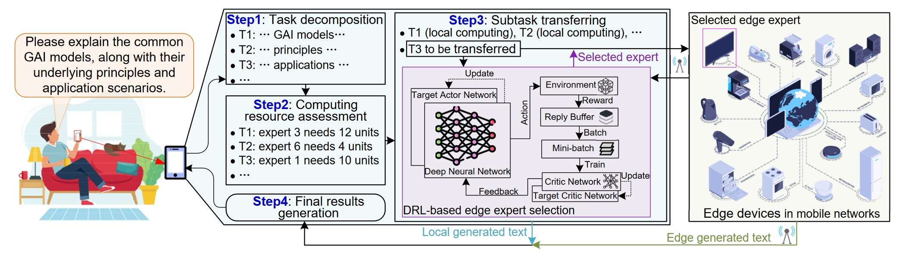
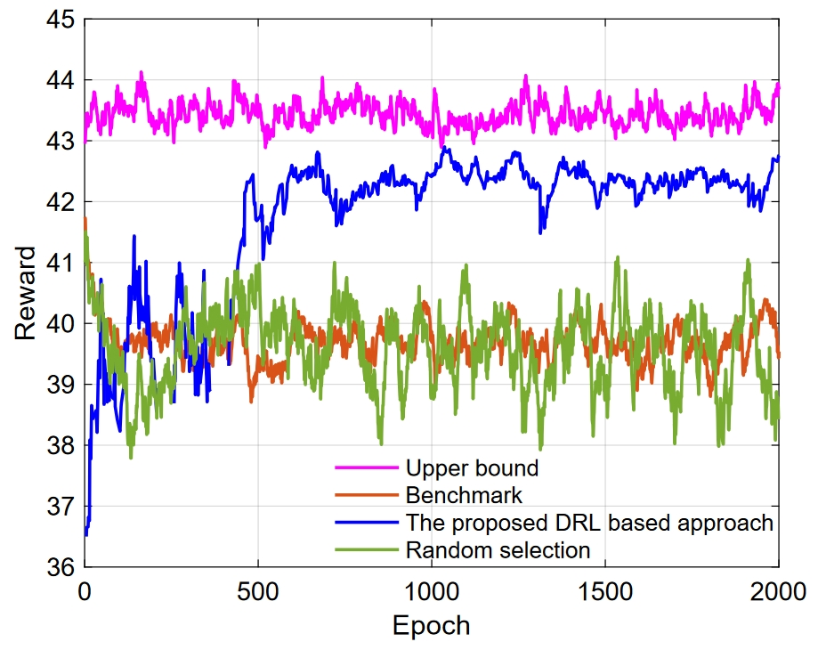
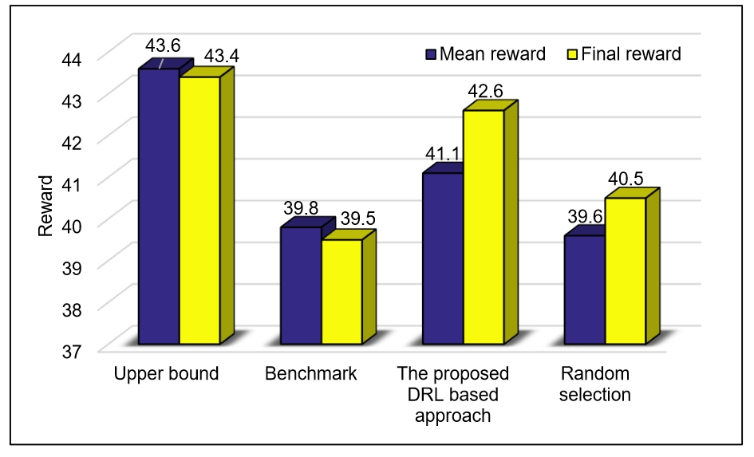

The advancement of generative artificial intelligence (GAI) has driven revolutionary applications like ChatGPT. The widespread of these applications relies on the mixture of experts (MoE), which contains multiple experts and selectively engages them for each task to lower operation costs while maintaining performance. Despite MoE, GAI faces challenges in resource consumption when deployed on user devices. This paper proposes mobile edge networks supported MoE-based GAI. We first review the MoE from traditional AI and GAI perspectives, including structure, principles, and applications. We then propose a framework that transfers subtasks to devices in mobile edge networks, aiding GAI model operation on user devices. We discuss challenges in this process and introduce a deep reinforcement learning based algorithm to select edge devices for subtask execution. Experimental results will show that our framework not only facilitates GAI's deployment on resource-limited devices but also generates higher-quality content compared to methods without edge network support.
This repository hosts a demonstration of the case study as presented in the paper
"Toward Scalable Generative AI via Mixture of Experts in Mobile Edge Networks" Download Paper
To create a new conda environment, execute the following command:
conda create --name netmoe python==3.8Activate the created environment with:
conda activate netmoeThe following packages can be installed using pip:
pip install transformers
pip install gym
pip install torch
pip install numpy
pip install matplotlibCall GPT API to build a gating network and several text generation experts who are good at generating text with different contents. The gate function can segment input prompts and selected the experts based on semantics, and can also fuse text segments based on semantics. https://platform.openai.com/docs/guides/text-generation
Using GPT API to evaluate the generated text and get the explicit score (https://arxiv.org/pdf/2304.00723.pdf).
The prompt here could be:
Score the following story on a continual scale from 0 (worst) to 10 (best), where a score of 0 means "The story makes no sense and is totally not understandable" and a score of 10 means "The story is perfect-written and highly consistent".
Input the prompt (a sentence) and use the gating network to split the prompt into several words and selected experts to generate the text based on these words.
Use the gating network to fuse the texts generated by different experts. The prompt could be:
‘Combine the following passages together to form a complete story’
Evaluate the text to get the scores. Taking three experts as an example, the explicit scores of the generated texts are given in the excel table. At the same time, the table also gives the word count of the generated texts, which corresponds to the transfer load of experts in the edge network.
Generate the SNR corresponding to each expert randomly, and calculate the computing and transmission cost (based on the Shannon Theory). The computing cost is the number of words in the generated text multiplied by a coefficient.
Train the DRL to select the suitable experts in the mobile edge network.
 Should our code assist in your research, please acknowledge our work by citing:
@article{wang2024toward,
title={Toward Scalable Generative AI via Mixture of Experts in Mobile Edge Networks},
author={Wang, Jiacheng and Du, Hongyang and Niyato, Dusit and Kang, Jiawen and Xiong, Zehui and Kim, Dong In and Letaief, Khaled B},
journal={arXiv preprint arXiv:2402.06942},
year={2024}
}